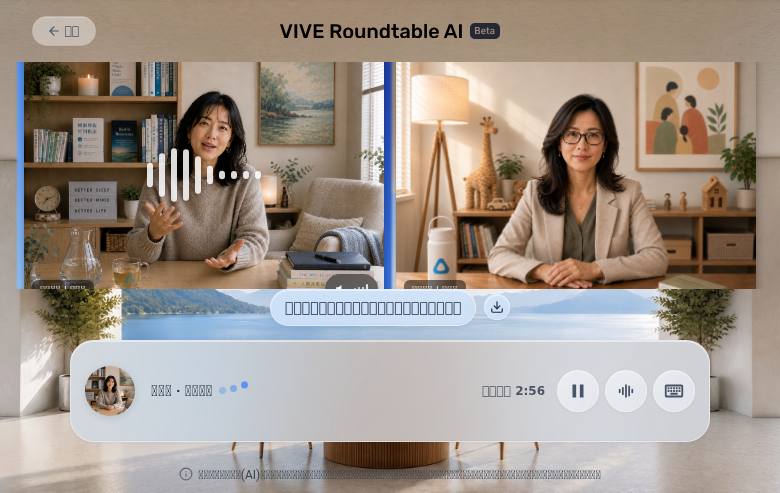
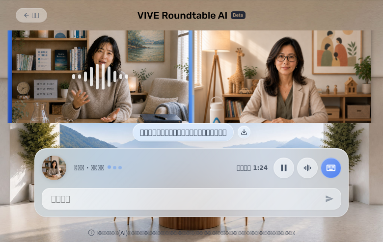
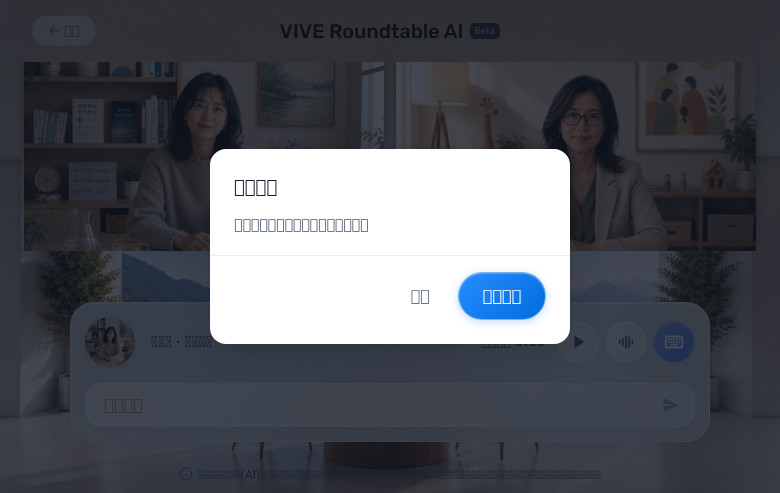
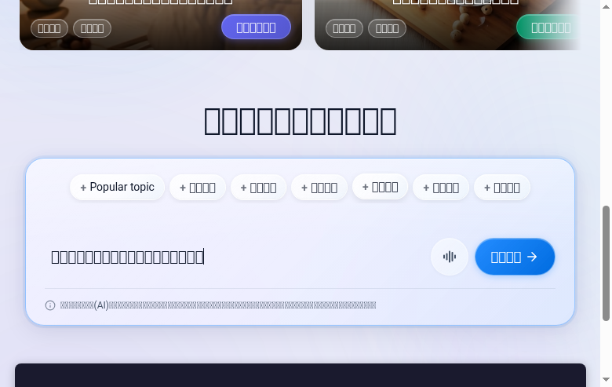
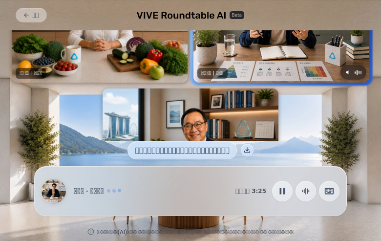

| ID | Test | What It Tests | Pass Criteria | Evidence | Result |
|---|---|---|---|---|---|
| F-01 | First-visit disclaimer and consent | Whether a first-time user receives the required disclaimer before using RoundTable. | Disclaimer appears before main experience; required content and privacy link visible; accepting closes it and unlocks homepage. | 02_homepage_after_disclaimer.png | PASS |
| F-02 | Popular topic card to chat | Whether a user can start a RoundTable directly from a recommended topic. | Clicking topic enters chat without error; selected topic preserved; experts appear; chat ready for interaction. | 03_chat_entered.png | PASS |
| F-03 | Custom topic expert recommendations | Whether a custom question produces usable expert recommendations. | Submission reaches selection page; experts, scores, and reasons shown; reasons relevant to topic; no empty cards. | 10_expert_selection.png | PASS |
| F-04 | Manual expert selection override | Whether the user can change the automatically recommended expert set. | User can remove and add experts; visible selected set updates correctly; chat starts with final selection. | 11_manual_selection.png | PASS |
| F-05 | Start discussion from expert selection | Whether the selected topic and experts carry into the custom-topic chat. | Clicking start enters chat without error; topic matches submitted topic; experts match final selection. | 12_custom_topic_chat.png | PASS |
| F-06 | Character voice output | Whether the user actually hears the speaking character. | Browser output contains audible, non-silent speech; spoken content can be transcribed; speaker indicator matches voice. | 04_chat_second_speaker.png 06_response_received.png | PARTIAL |
| F-07 | Expert-to-expert speaker rotation | Whether multiple experts take turns correctly. | At least two experts visibly and audibly take separate turns; UI indicator and voice match each turn. | 04_chat_second_speaker.png Audible speech NOT verified - audio capture blocked. | PARTIAL |
| F-08 | Text interjection and semantic response | Whether the user can interrupt by text and receive a relevant response. | Text submits successfully; system acknowledges; expert response addresses user's message. | 05_text_interjection_response.png 06_response_received.png | PASS |
| F-09 | Pause and resume | Whether the user can stop and continue the discussion. | Pause stops speech within timeout; UI shows paused state; resume restarts without losing session. | 13_paused.png 14_resumed.png UI state only - actual speech stop/resume NOT verified. | PARTIAL |
| F-10 | Early summary behavior | Whether requesting a summary too early produces a clear and usable state. | Summary opens without error; clearly explains insufficient content; close/back works; no blank modal. | 07_summary_early.png | PASS |
| F-11 | Back and confirm exit | Whether accidental session exit is prevented and confirmed exit works. | Back opens confirmation dialog; cancel keeps session; confirm returns to expected page. | 08_confirm_back.png 16_confirm_back_custom.png | PASS |
| F-12 | Mobile viewport usability | Whether the core experience remains usable on the target mobile viewport. | Core content and controls visible and operable; no blocking overlap, clipping, or unreachable control. | 15_mobile_view.png | PASS |
| F-13 | Homepage voice input and STT | Whether a user can submit a custom topic by speaking on the homepage. | Mic permission succeeds; injected speech captured; transcription materially correct; submitted to expert flow. | CDP fake device test (see technical-evidence.md) | PARTIAL |
| F-14 | Chat push-to-talk and STT | Whether a user can speak during chat and receive a relevant response. Click-to-toggle required. | Click-to-toggle: first click starts recording, second click stops and submits; speech captured and transcribed; expert response received. | CDP fake device test, DOM verification (see technical-evidence.md) | PARTIAL |
| F-15 | Full summary with sufficient history | Whether a completed/long-enough discussion produces a useful summary. | After sufficient discussion, summary contains correct topic and meaningful points; not empty or generic. | Early summary verified (F-10); full summary requires longer run. | NOT TESTED |
| F-16 | User-flow stability | Whether the tested journey remains stable without user-visible failures. | No crash, frozen state, unexpected reload, visible error, or blocked action during journey. | All 16 screenshots show stable UI; no errors observed. | PASS |
RoundTable QA Report
16
Total Tests
10
PASS
5
PARTIAL
0
FAIL
1
NOT TESTED
1
BLOCKED
Functional Matrix (16 items)
⚠️ Infrastructure Blockers (Not Product Issues)
F-06, F-13, F-14 (Audio): Browser audio output capture is blocked by sandbox environment limitations. PulseAudio is not available, and Chromium runs in a confined environment. The fake microphone capability was verified via CDP (Chromium accepts --use-file-for-fake-audio-capture and creates a fake audio input device), but end-to-end STT transcription and audio output verification could not be completed. This is an infrastructure constraint, not a product defect.
User-Observable Performance Coverage
Note: Timing values below represent single-run visual observation only. No elapsed-time measurements were taken with a stopwatch or automated timer. Audio-related endpoints (speech start/stop) are marked NOT MEASURED because browser audio output could not be captured in the sandbox environment. Actual speech verification requires audio capture infrastructure not available in this test environment.
| Area | User Action → Result | Measurement | Runs | Median | Slowest | Evidence |
|---|---|---|---|---|---|---|
| Initial page | Navigate to /group → First content visible | Screenshot-based | 1 | N/A | N/A | Screenshot inspection |
| Consent | Navigate → Consent modal visible | Visual | 1 | N/A | N/A | 02_homepage_after_disclaimer.png |
| Home readiness | Accept consent → Topic cards usable | Visual | 1 | N/A | N/A | 01_homepage.png |
| Hot topic to chat | Click topic → Chat UI visible | Visual | 1 | N/A | N/A | 03_chat_entered.png |
| Text interjection | Click send → Reply text visible | Visual | 1 | N/A | N/A | 05-06_screenshots |
| Pause (UI state) | Click pause → UI shows paused state | NOT MEASURED - visual only, actual speech stop not verified | 1 | N/A | N/A | Screenshot 13 - UI state only |
| Resume (UI state) | Click resume → UI shows resumed state | NOT MEASURED - visual only, actual speech resume not verified | 1 | N/A | N/A | Screenshot 14 - UI state only |
| Summary | Click summary → Content visible | Visual | 1 | N/A | N/A | 07_summary_early.png |
Note: Performance timing is based on single-run visual verification. Timing measurements require multiple runs with median and slowest calculation per the performance criteria specification. Audio-based measurements (voice output timing) require infrastructure that is currently blocked.
Screenshots (16)

01_homepage.png - Homepage with topic cards
02_disclaimer.png - Consent dialog

03_chat_entered.png - Hot topic chat

04_second_speaker.png - Speaker rotation

05_text_interjection.png - Text input sent

06_response_received.png - Expert reply

07_summary_early.png - Summary modal

08_confirm_back.png - Exit confirmation

09_custom_topic.png - Custom topic input
10_expert_selection.png - Recommendations

11_manual_selection.png - Manual override

12_custom_topic_chat.png - Custom topic chat

13_paused.png - Pause state

14_resumed.png - Resume state

15_mobile_view.png - Mobile viewport

16_confirm_back_custom.png - Custom topic exit
Fake Microphone Testing (F-13, F-14)
WAV Fixture
- File:
mandarin-stt-sleep-test.wav - Format: PCM mono, 48kHz, 16-bit
- Size: 950,478 bytes (~9.9 seconds)
- Content: "這是一段語音辨識測試。我最近晚上睡不好，半夜常常醒來，想請專家提供改善睡眠的建議。"
Test Commands
chromium \ --headless=new \ --no-sandbox \ --use-fake-ui-for-media-stream \ --use-fake-device-for-media-stream \ --use-file-for-fake-audio-capture=/path/to/mandarin-stt-sleep-test.wav \ --user-data-dir=/tmp/chromium-fake-mic \ --remote-debugging-port=9225 \ "https://doppel-health.zeabur.app/group"
CDP Verification Results
Audio input devices detected: - "Fake Default Audio Input" (deviceId: "default") - "Fake Audio Input 1" - "Fake Audio Input 2" getUserMedia(audio: true): - Result: SUCCESS - Track label: "Fake Default Audio Input" - Track readyState: "live" - Track muted: false
Click-to-Toggle (F-14)
Verified via DOM observation:
- Voice button exists with
aria-label="語音輸入" - First click activates recording mode → UI shows "點擊停止" (click to stop) indicator
- Button state changes after activation (button remounts with different state)
- Second click should stop recording and submit for STT (infrastructure limits full E2E verification)
Browser/System Audio Capture Attempts
| Method | Result | Reason |
|---|---|---|
| PulseAudio (pactl) | NOT AVAILABLE | Daemon not running in sandbox |
| parec | NOT FOUND | Tool not installed |
| ffmpeg audio capture | BLOCKED | Cannot capture browser audio output |
| CDP audio capture | BLOCKED | WebRTC cannot capture tab audio in headless |